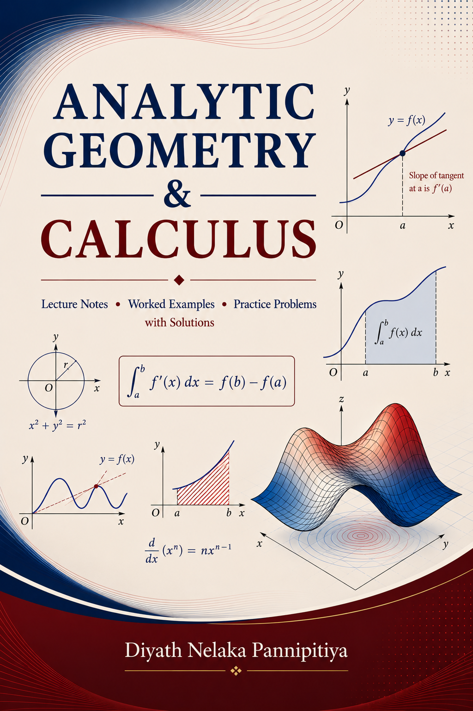

This page contains selected course notes and graduate qualifying exam materials made available for educational purposes.

Lecture Notes, Worked Examples, and Practice Problems with Solutions
A free open textbook covering a standard first course in analytic geometry and calculus.
The book contains nearly 600 pages of explanations, worked examples, chapter exercises, practice problems, and selected solutions.
Last updated: Fall 2025.
Solutions to the Qualifying Examinations
This resource contains complete solutions and proofs for graduate qualifying examination problems in Real Analysis and Measure Theory at Indiana University Indianapolis. It is intended as a study resource for graduate students preparing for qualifying examinations in real analysis and measure theory.